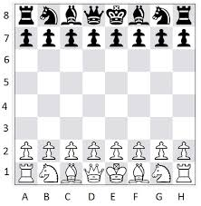
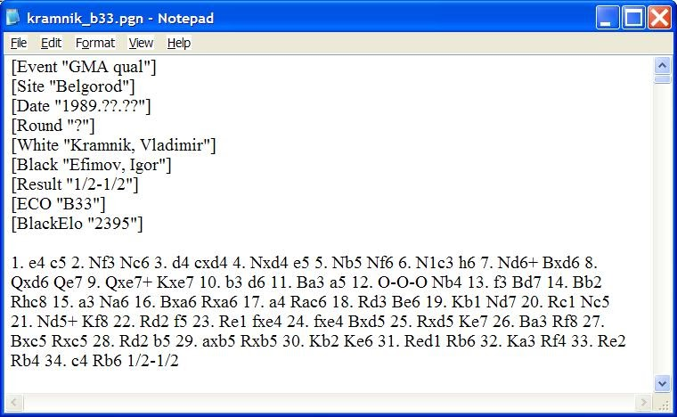
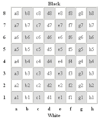
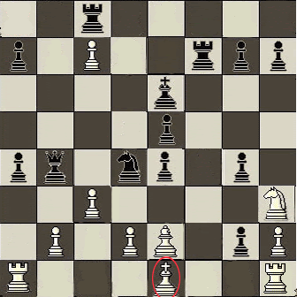
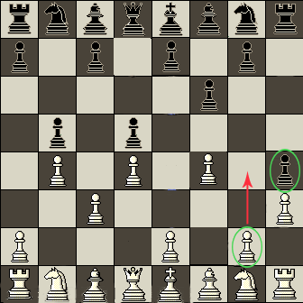

PGN Parser¶
For all the chess fans!!
I have developed an application which reads a pgn file and produces the final position on the chessboard.
What is a PGN file?¶
A PGN file is a file which contains a non-ambiguous representation of moves played during a game. This format is easily readable by computer programs and humans. This file contains a sequence of moves taken place during a game. It also contains the details of the game such as players, time, etc. These details head the file in the Seven Tag Roster form. Also there can be comments on the game between the moves.
Note
Nested Comments are not allowed.
Here is a sample pgn file:
Main idea used¶
We read the given .pgn file and extract the list of moves. Now we separate the white and black moves and send it to the respective function. These functions update the board view i.e position on the chess board for every move and update the list of locations where the piece could possibly be present.
Eccentricities of the problem¶
The eccentricities of this problem are:
Modelling the chess board¶
In my application the chess board is stored as a matrix of 8 * 8 dimensions, where each element stores whether the it is empty or the piece it has. Each square is accessed by the following format given by the rules of chess.
Reading from the PGN file¶
Since a pgn file has some extra details in comments and the Seven Tag Roster, I have used regular expressions to extract a list of moves.
Handling special moves in chess¶
There are some special moves in chess such as :
Castling¶
Castling where the king side or the queenside rook is got to a middle square and swapped positions with the king.
I have implemented a castling() to perform the move. It updates both the rook’s and king’s position on the board.
Enpassant Pawn Capture¶
This movement is depicted by the gif shown. It occurs only when the black pawn is at e5 or the white pawn is at e4. Also the pawn to be killed must have moved 2 places just before making this move. I have implemented a make_empassant() to perform the move. This method updates the status of the pawn captured as well as the pawn capturing it.
Pawn Promotion¶
When a pawn reaches it’s respective last rank i.e white reaches the 8th rank and black pawn reaches the 1st rank, it can upgrade to any piece the player wants. The player can choose one from the following:
- Queen
- Knight
- Bishop
- Rook
The promote_pawn() does the above move. It deletes the pawn from the board and adds a position in the piece view of the piece it upgraded to.
To sum up..¶
My application accepts .pgn files and produces the corresponding final position after doing all the moves given in the file.
To see the code fork this repository.